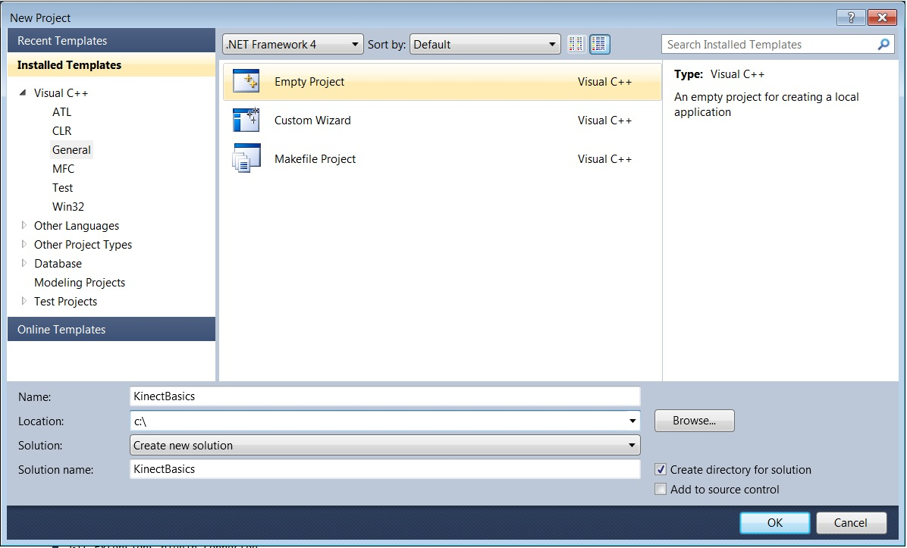
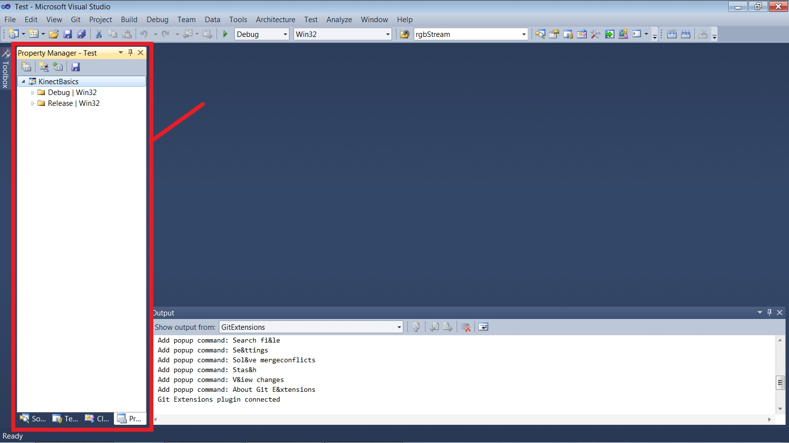
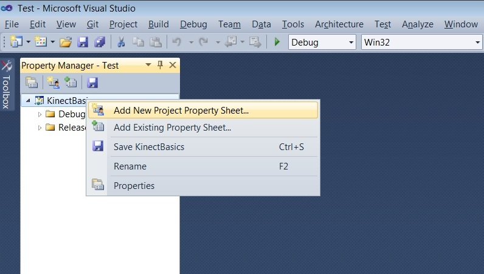
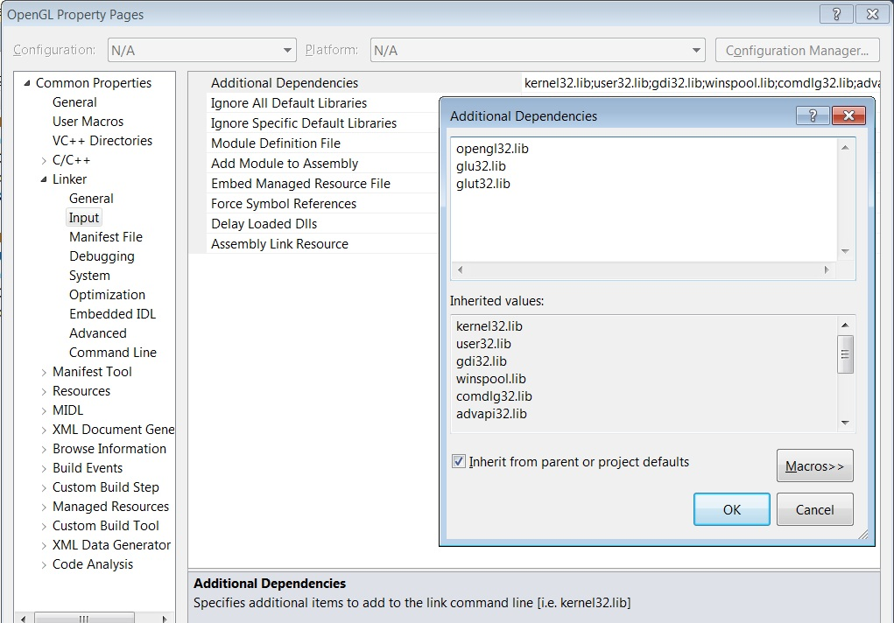

Kinect v1 SDK C++ - 0. Setup
This series of tutorials is intended for C++ programmers who want to use Microsoft's Kinect SDK. There will be as little Windows code as possible. We will be using OpenGL for graphics.
Goals: Ensure you have the necessary components for coding with Kinect. Set up a Visual Studio
project with the proper build configurations.
Source: View Source Download: 1_Basics.zip
Prerequisites:
- Windows (this is the Windows SDK, after all)
- A Kinect (preferably Kinect for PC)
- Visual Studio (some recent version)
- Experience with C
- Familiarity (or willingness to learn) OpenGL
Click here for the GLUT Version of 0. Setup
Installing SDL
Download the latest version of the Visual C++ SDL Development Libraries from libsdl.org; at the time of writing this was version 1.2.15
Unzip the contents to a suitable place (e.g. C:\).
To make our lives easier we will do two things:- Copy the SDL.dll file to our system directory. Go to C:\SDL-1.2.15\lib\x86 (or the equivalent) and copy SDL.dll. Paste it into C:\Windows\SysWOW64 if that folder exists (i.e. you have a 64-bit version of Windows). Otherwise, paste it into C:\Windows\System32
- Add the SDL folder as an environment variable.
Open up the start menu, right click Computer, and select
Properties. Click "Advanced System Settings" on the left
side, go to the Advanced tab in the resulting dialog, and click
the button labelled "Environment Variables".
Under User variables (the top set of buttons) click "New...". Enter "SDL_DIR" (no quotes) for the variable name and the path to the SDL directory (e.g. "C:\SDL-1.2.15") as the value.
Creating a Kinect Project
Open up Visual Studio and start a new Empty Project. Click File > New > Project...; then select C++ > General > Empty Project. Name it appropriately. To configure the build rules (i.e. includes and libs) we will use the Property Manager. This will allow us to save the configurations to separate files so that we can use them again later.
Go to View > Property Manager. This will open up a pane in one of the subwindows in Visual Studio containing build rules.
In the Property Manager, right click on the project name and select Add New Project Property Sheet; name it "OpenGL". Create another one named "KinectSDK". You should see several new items appear under "Debug" and "Release" with the names of your new Property Sheets. Property Sheets are files (extension .props) that contain build configuration data. For modularity, we will create one for our OpenGL info and one for our Kinect SDK info.

Right-click the Kinect Property Sheet and click Properties.
Note that to add Include and Library Directories, you can either just
type into the box, or you can click the dropdown, select <Edit>,
and enter the location in the resulting dialog. This method lets you
manage multiple directories easily, as well as lets you browse for the
exact directory (if you don't use environment variables like
KINECTSDK10_DIR)
Right-click the OpenGL Property Sheet and click Properties. Under Linker > Input > Additional Dependencies, add the following:
opengl32.lib
glu32.lib
SDL.lib
SDLmain.lib

That's it for now - you have a project that is ready for some code.